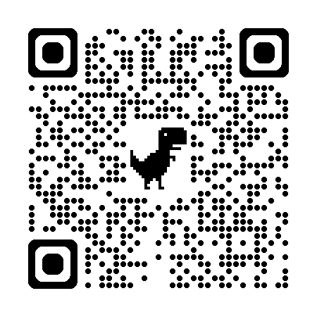

Panorama de l’offre agentique en novembre 2026, avant de construire notre concierge.
Google a tout rebaptisé en 2026. Le plus simple : se demander qui parle à l’agent.
Assistant, recherche dans les outils de l’entreprise, agents créés sans code par les métiers.
CX Agent Studio, Agent Assist, CX Insights, centre de contact.
ADK, Agent Runtime, Model Garden, gouvernance des agents.
ces.googleapis.com).Disponible depuis le 4 février 2026. Une refonte complète, construite sur ADK.
CX Agent Studio est au centre de Gemini Enterprise for Customer Experience.
Agents · instructions · outils
guardrails · évaluations · versions
Gemini uniquement
Exemple : le concierge que vous allez construire.
{@AGENT: Programme}Forfait par session, tout compris : idéal pour la voix, moins pour les très courtes.
Cinq tâches, avec Arc pour générer les agents. Bloqué plus de deux minutes ? Levez la main.
eu à la création de l’application. La valeur proposée par défaut est us.eu, pas us.ces.cloud.google.com.Merci d’avoir suivi l’atelier. Votre retour m’aide à l’améliorer.

Scannez le QR code ou ouvrez le lien.